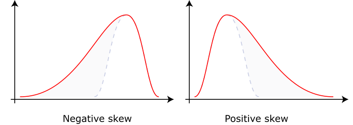

9 Numerical data exploration
We were able to calculate the mean and standard error for some of our data, but there are some functions that are designed to help us explore our data and get those measurements more easily.
9.1 summary()
Base R has a function called summary() that you can use on a lot of different types of objects.
If you use it on a data frame, it will print the following values for each numeric variable:
- Minimum
- 1st quartile (25% percentile value)
- Median (50% percentile value)
- Mean
- 3rd quartile (75% percentile value)
- Maximum
- Number of NAs (if applicable)
Type the following code into your R script and run it:
# Basic descriptive statistics
summary(irisdata)
#> Sepal.Length Sepal.Width Petal.Length
#> Min. :4.300 Min. :2.000 Min. :1.000
#> 1st Qu.:5.100 1st Qu.:2.800 1st Qu.:1.600
#> Median :5.800 Median :3.000 Median :4.350
#> Mean :5.843 Mean :3.057 Mean :3.758
#> 3rd Qu.:6.400 3rd Qu.:3.300 3rd Qu.:5.100
#> Max. :7.900 Max. :4.400 Max. :6.900
#> Petal.Width Species
#> Min. :0.100 setosa :50
#> 1st Qu.:0.300 versicolor:50
#> Median :1.300 virginica :50
#> Mean :1.199
#> 3rd Qu.:1.800
#> Max. :2.500Q: What information does it provide for non-numeric variables like species?
9.2 describe()
The psych package has a function called describe() that provides a larger and slightly different set of statistics. Most of these should already be familiar to you:
- count of observations (\(n\))
- mean
- standard deviation (sd)
- median
- minimum (min)
- maximum (max)
- range
- standard error (se)
However, some may be less familiar (see below).
Type the code below into your R script and run it:
describe(irisdata, omit = TRUE, IQR = TRUE)
#> vars n mean sd median trimmed mad min max
#> Sepal.Length 1 150 5.84 0.83 5.80 5.81 1.04 4.3 7.9
#> Sepal.Width 2 150 3.06 0.44 3.00 3.04 0.44 2.0 4.4
#> Petal.Length 3 150 3.76 1.77 4.35 3.76 1.85 1.0 6.9
#> Petal.Width 4 150 1.20 0.76 1.30 1.18 1.04 0.1 2.5
#> range skew kurtosis se IQR
#> Sepal.Length 3.6 0.31 -0.61 0.07 1.3
#> Sepal.Width 2.4 0.31 0.14 0.04 0.5
#> Petal.Length 5.9 -0.27 -1.42 0.14 3.5
#> Petal.Width 2.4 -0.10 -1.36 0.06 1.5Here, we are providing the required data frame and two optional keyword arguments to change the settings. Optional arguments can be written in any order (after the required arguments) and use the keyword followed by = to tell the function which specific setting the input belongs to.
(We could also write out describe(x = data_area) if we wanted, but instead we are taking advantage of R’s defaults for handling required arguments.)
- The
omitargument tells it to ignore non-numeric data - otherwise it will convert them to numbers and provide nonsense output. (You can try it leaving it out and give the results a look if you want.) - The
IQRargument tells it to provide the interquartile range, which otherwise it would exclude.
The interquartile range is calculated by subtracting the 1st quartile value from the 3rd quartile value - this number tells you the spread of the middle 50% of your data.
The output from describe() includes two very important statistical values, which are both used when we are evaluating the normality of a distribution:
- Skew - a measure of how asymmetrical the data distribution is, and in which direction (see picture from Wikipedia below).
- Kurtosis - a measure of “tailedness” or how much of a distribution is found in its tails.
Negative skewness values imply that the data are negatively skewed (tail to the left), and positive skewness indicates positive skew (tail to the right). The further away from zero the skewness is, the more skewed the distribution.

Positive kurtosis means fatter tails, while negative kurtosis means thinner tails.
The describe() output also includes some unusual values that are not commonly used in environmental science or ecology, so we’ll ignore them. I’m including definitions here only for the curious / completionist among us, but feel free to ignore and/or immediately forget:
- Trimmed mean - the mean calculated with the top 10% and bottom 10% of values removed.
- MAD (median absolute deviation) - another measure of variability. It’s calculated by taking the absolute value of the difference between every observation and the median, and then taking the median of that list of numbers.